NUITAI
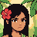

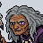
INSTRUCTION BOOKLET
Table of
Contents
- The World of Nuitai3
- Basic Controls4
- Getting Started6
- Out in the World8
- The Field Menu10
- Battle Screen14
- Elements and Stances18
- Cast of Characters20
- Creatures of the Islands24
- Items26
- Growing Stronger28
- Adventure Guide30
The World
of Nuitai
Nuitai is a world of ocean, scattered with islands that circle a great whirlpool. Its people say that magic is motion: a dance, a kick, a breath can call on the elements.
Kulāiwi is a small island in the Māla Iki Islands, beside Māla Iki itself, the largest island of the chain. It has one village, also called Kulāiwi. This is the home of Kailo, the village cook, and Hina, a young priestess.
It is the last day of summer. The boars have come down from the woods again, and they are digging up the taro patch. Tonight the whole village gathers for Old Pono's wake. Before then, someone has to deal with the boars, and with the biggest of them all, the Great Boar, at the top of the woods.
3Basic
Controls
Here is how the controller works in NUITAI.
Hold L, R, START and SELECT together to reset the game and go back to the title screen. Anything you have not saved will be lost.
Getting
Started
Insert the Game Pak and turn the power on. When the title screen appears, choose with the D-Pad and press A.
New Game
Begin a new adventure from the very start.
Continue
Pick one of your three saved games and start from wherever you last saved.
To erase a saved game, choose DELETE A SAVE under the three files, then the file, then YES. Once erased, it is gone for good.
Saving Progress
You can save only at a save point. Look for places to rest, like Kailo's bed in his house in town, or the healing pool in the woods. Take a nap or a drink and you will be asked if you want to save. While you stand next to one, you can also choose Save from the field menu. Anywhere else, Save is grayed out.
Resting there also heals the whole party and brings back anyone who has fallen.
It is very important to save your game often, and always before a big fight.
Out in
the World
This is where most of your adventure takes place: in the village, on the beach and in the woods.
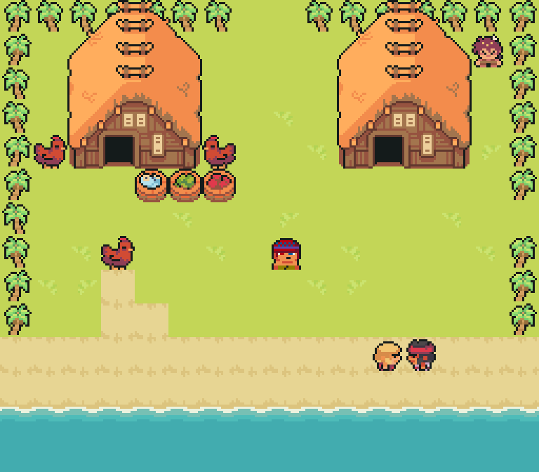
Walking
Walk with the D-Pad. Walk off the edge of the screen to go on to the next area. Walk up into a door to go inside.
Talking
Face someone and press A to talk with them. The people of the village know a great deal, and some have something to teach you.
Monsters
Monsters roam out in the open. When you touch one, a battle begins (page 14). Some will spot you and give chase! A boar seldom travels alone, so expect its friends to join in. Monsters you beat will leave, but they come back when you return.
A fight in the village is fought on the beach. Anywhere outside of town, it is fought in the jungle.
Some great beasts stand still and wait for you. When you walk up to one, you will be asked if you are ready. Say no to go back and prepare.
Shops
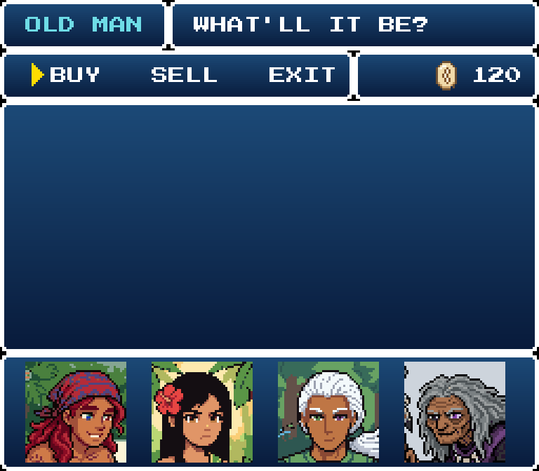
Talk to a seller to see what they have. Choose an item, then how many.
Prices are in pule , the shell money of the islands. You will earn pule by winning battles.
There is a market stall in the village. Other sellers may turn up where you least expect them.
Some people are good at haggling. With the right friend along, every seller charges less.
Gardens
Taro grows in the village garden, and wheat in the palm grove. Face a ripe plant and press A to pick it. A ripe patch gives two.
Anyone can pick, but only Hina knows how to plant a patch again. Press A on a bare patch with Hina in the party and she will replant it, using one of what it grows. A patch picked without her stays bare until she comes by.
Plants grow as you walk, so keep exploring and come back later. Someone you meet in the woods knows a way to make a planted patch grow faster.
The Cooking Pot
There are big cooking pots in the village. Face one and press A, and Kailo will cook. It works just like Craft on the field menu (page 10).
8Battle
Screen
A battle starts when you touch a monster. Beat every monster to win!
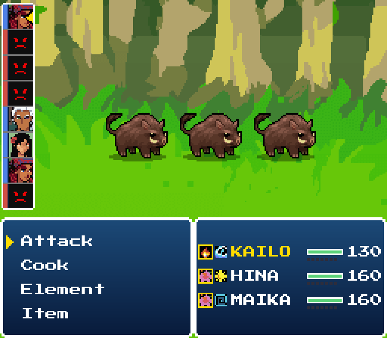
1 2 3 4 5- 1Turn Order
Who acts next, from the top down. The party is marked in blue, monsters in red. - 2Enemies
Know your foe! - 3Commands
What the member whose turn it is can do. Press left or right on the D-Pad for more. - 4Elements
The member's two elements. The stance they fight in is boxed in yellow. - 5Hit Points
HP left. The small blue marks under the bar are Mana.
| Command | What it does |
|---|---|
| Attack | Strike one enemy with your weapon, in strokes. See below. |
| TECH | The member's own special command, shown by its name: Kailo's Cook, Hina's Scold, Maika's Charm, Tawiri's Call. It costs no Mana. |
| Element | Use an element move, or switch stance. Moves cost Mana. |
| Item | Use an item from the bag. |
| Defend | Take half damage from blows until your next turn, and gain 1 Mana. |
| Escape | Try to run away. It does not always work, and you cannot run from some fights. |
| Weapon | Change weapons, if you have another. |
| Swap | Trade places with someone on the bench. The one coming in takes the turn. |
| Combo | Appears when two members are ready to team up. |
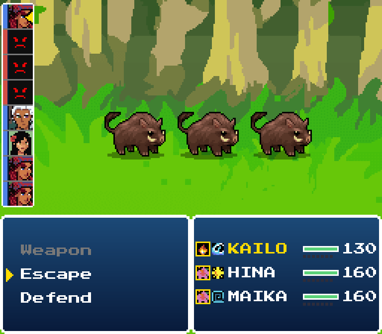
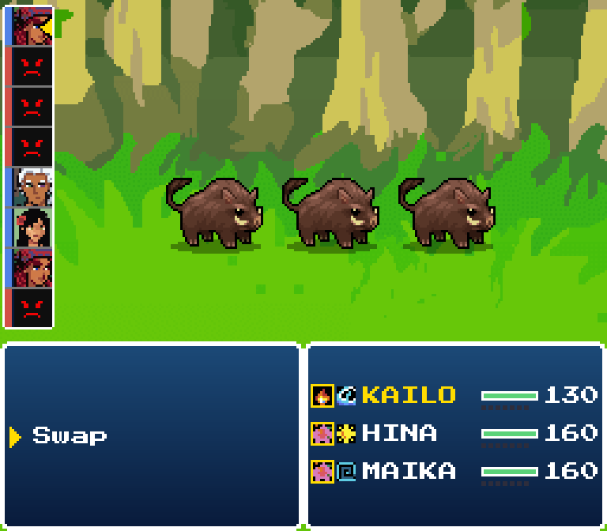
Attack
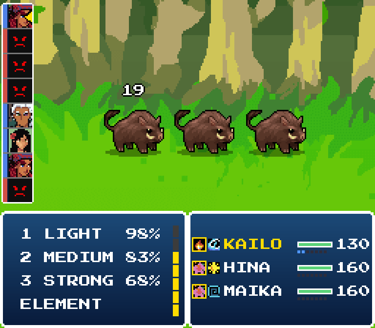
An Attack is made of strokes. Each turn you have 7 points to spend: LIGHT costs 1, MEDIUM 2 and STRONG 3.
Each stroke shows its chance to hit. A light stroke almost always lands. A strong one hits much harder, but misses more. Every stroke that lands makes the next one more likely to land, and builds Mana.
You can stop any time and finish your turn with an element move or an item.
Mana
Mana is the energy a fighter builds by moving. Everyone starts a battle with 0 Mana and can hold up to 7. Attack and Defend to build it, then spend it on element moves. A move in row 3 costs 3 Mana.
Status Trouble
| Trouble | What happens |
|---|---|
| Poison | Slowly takes HP. A poisoned monster turns green. |
| Sleep | Cannot act until hit. A sleeping monster has Zs over its head. |
| Blind | Blows miss half the time. A blinded monster wears sunglasses. |
| Burn | Hurts each time the burned one acts. It cannot be healed until the burn is gone. |
| Confuse | Sometimes attacks its own side. |
Victory and Defeat
Monsters you beat drop pule, and sometimes an item. If your whole party falls, the game is over, and you must start again from your last save.
14Elements
and Stances
There are six elements. Every fighter has two, and every monster has at least one.
Nature beats Water
Water beats Fire
Shadow beats Spirit
Spirit beats Light
A hit from the element that beats yours does double damage. A hit from the element yours beats does half.
What Each Element Does
| Element | Its work |
|---|---|
| Fire | Gives a punch or a kick its force. |
| Nature | Heals. |
| Water | Guards, taking blows for a friend. |
| Light | Protects and strengthens with a spell. |
| Shadow | Curses: blind, sleep, poison. |
| Spirit | Gives magic its force. |
Stances
Each fighter has two stances, one for each of their elements. The stance decides which element the fighter is right now: which moves they can use, which stats are higher, and which element hurts them. Kailo in Lelua kicks with fire. In Wai'Kenpō he stands firm like the tide.
To change stance in battle, choose Element. The switch is at the top, named after the other stance, and it gives you 1 Mana. Some moves use both elements and work in either stance.
Every battle begins in the stance boxed on the field menu. Change it on the Status screen.
18Cast of
Characters
Along the way, Kailo will be joined by friends. Each of them has special abilities.
Kailo
The Cook
The village cook, about nineteen, who looks after a house full of younger brothers, sisters and cousins. He has never left the islands and dreams of seeing the world. Wasting food upsets him.
- Elements
- Fire and Water
- Stances
- Lelua, a fire dance of spins, flips and flying kicks. Wai'Kenpō, a rooted water fist that steps in to take the hits meant for friends.
- Weapon
- Frying Pan
- TECH
- Cook. Pick two ingredients. On his next turn he serves the dish to anyone. Cooked fresh, a dish heals more than the same dish from the bag.
- Moves
- Flame Kick, a fiery kick. Wave Guard, he takes his friends' blows, at half.
- On the Road
- After every battle you win, Kailo feeds everyone still standing, and they get back a little HP. Only Kailo can cook in the pot.
Hina
The Māla Priestess
A young priestess of Māla and the party's healer. Sharp tongued, and usually right. One day she hopes to become the high priestess of her village.
- Elements
- Nature and Light
- Stances
- Māla Hula, a slow dance that heals and cures. Shakan Mudras, hand seals that speed up friends and ward off harm.
- Weapon
- Gohei
- TECH
- Scold. She tells one enemy exactly what is wrong with it. Every kind of monster takes it differently.
- Moves
- Heal, mends one ally. Shaka's Light, blocks the next shadow attack.
- On the Road
- After a battle you win, anyone who fell gets back up with 1 HP. Only Hina can replant a garden.
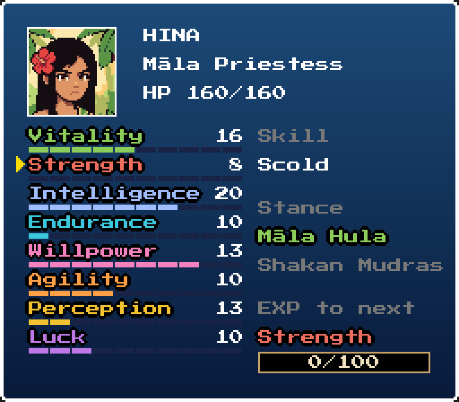
Maika
The Maki Sage
A traveling medicine seller from Māla Iki: calm, well spoken, and a little too sure of himself. He moves life from where it is to where it is needed. You may meet him in the woods, if you look.
- Elements
- Nature and Spirit
- Stances
- Kilomi, the healers' art of pressing points on the body. Maki Hula, a slow spiral dance that strikes with spirit magic.
- Weapon
- Ko'oko'o
- TECH
- Charm. A wild card. The enemy might drop its guard, refuse to fight, or even turn on its friends.
- Moves
- Spin, one turn of the spiral. Heal, mends one ally. Drain, takes life from an enemy and gives half to an ally.
- On the Road
- While Maika travels with you, sellers charge less. He also knows how to make a garden grow faster.
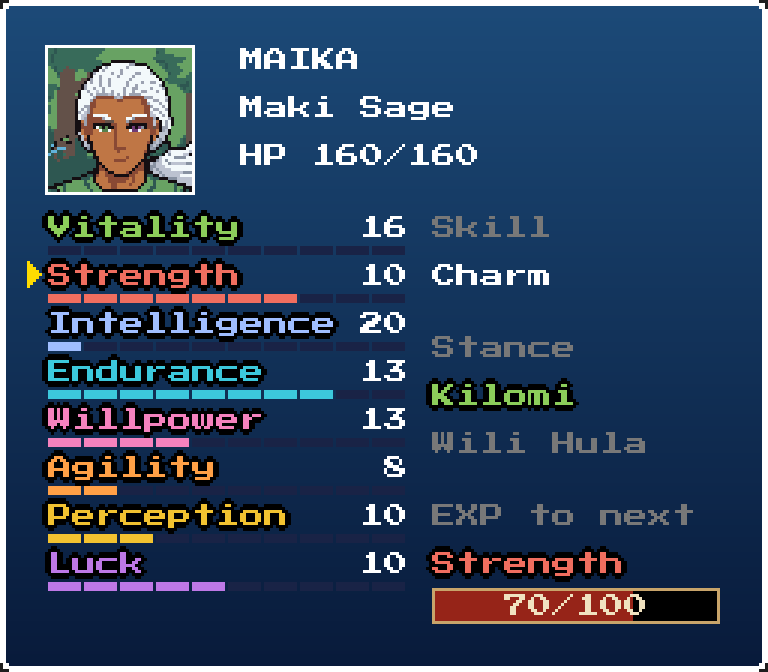
Tawiri
The Caller
An old woman from far away who speaks with the dead, with a dark sense of humor to match. One eye is clouded white. She knows more moves than anyone.
- Elements
- Shadow and Spirit
- Stances
- Ata Kanikani, a dark dance that curses. Wiri Kanikani, a whirling dance that strikes like lightning.
- Weapon
- Tokotoko
- TECH
- Call. One of the dead comes to fight at her side for a few turns.
- Moves
- Static, lightning that burns away the enemy's Mana. Sleep, a doze; a hit wakes it. Chain Lightning, jumps to every enemy. And many more.
- On the Road
- With Tawiri in the party, everyone's stats grow faster in battle.
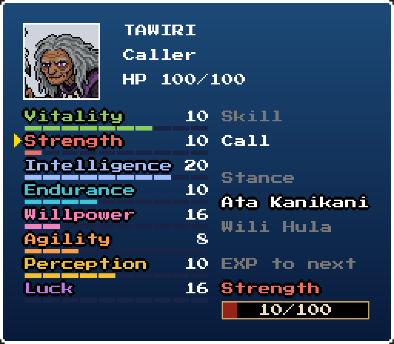
Only three fight at a time. When a fourth joins, one waits on the bench. Use Swap in battle, or Party on the field menu, to trade places. Everyone who travels with you helps on the road, bench or not.
Creatures of
the Islands
The woods and the jungle are not empty. Here are a few of the creatures you may meet.
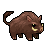
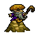
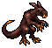
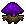
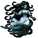
Every creature you beat gets a page under Data on the field menu, with its picture and what is known about it.
Items
When your HP is low, during or after a battle, you will need these items.
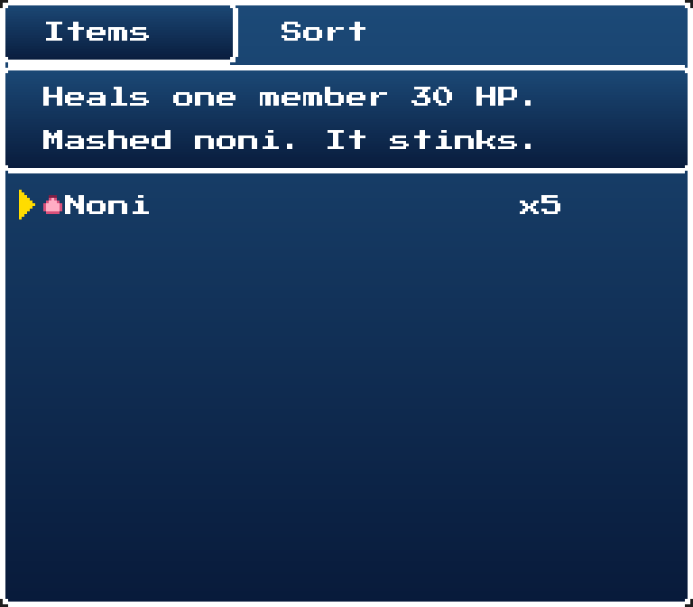
The party shares one bag. Use items with Items on the field menu, or Item in battle. The window at the top tells you what the item under the cursor does.
Island Medicine
The islanders heal with the plants that grow around them: fruit, roots, leaves and oil. Noni is sold at the market stall. For the rest, look for someone who sells medicine.
| Name | Price | Description |
|---|---|---|
| Noni | 10 | Restores 30 HP. Mashed noni fruit. It stinks. |
| 'Awa | 30 | Restores 80 HP. A calming root drink. |
| Kukui | 15 | Candlenut oil. In battle, cures a burn. |
| Ti Leaf | 15 | A cool leaf. In battle, cures sleep and confusion. |
| 'Ōlena | 15 | Turmeric root. In battle, cures poison. |
Food
Anything that goes in the pot can also be eaten as it is, for a little HP. Cooked, it is worth much more. Kailo cooks with Craft on the field menu, or with Cook in battle. There is no recipe book: put two things in the pot and find out! If they don't go together, nothing is lost.
| Name | Price | Where to find it |
|---|---|---|
| Wheat | Grows in the palm grove. | |
| Taro | Grows in the village garden. | |
| Broth | 5 | Sold at the market stall. |
Special Items
| Name | Description |
|---|---|
| Moves | An item that teaches one member a move, shown in the bag and in shops by the move's name, like Counter. Use it and that member learns the move. Then it is gone. |
| Seer's Shell | Hold it to your eye in battle to read an enemy's element and HP. Used up. |
| Seeds | A Seed of Strength, a Seed of Agility, and more. Each raises that stat for one member. Rare! |
Growing
Stronger
Your party never gains levels. They grow stronger by doing.
Stats grow by use. Each time you use a stat, it fills a little, and when it is full, it goes up. Land strong blows and Strength grows. Land light strokes one after another and Agility grows. Take blows and Endurance grows. Heal a friend or strike with magic and Intelligence grows, faster for greater magic. When a stat goes up, a message along the top of the screen tells you, and a stat can go up more than once in a battle.
New moves come from what you find: items named for a move, and people who teach you.
Seeds raise a stat for good.
The Eight Stats
| Stat | What it does |
|---|---|
| Vitality | Your HP. Ten HP for each point. |
| Strength | How hard your blows land. |
| Intelligence | How strong your magic and healing are. |
| Endurance | Blocks blows. |
| Willpower | Shrinks magic damage. |
| Agility | How soon your next turn comes. |
| Perception | Your chance to land a hit. |
| Luck | Your chance to dodge. |
Adventure
Guide
Prepare to set out on your journey. Use this guide to help you in the beginning.
Visit Your Neighbors
Walk around the village and talk with everyone. They will have information you may need, and the old man at the market stall has something only he sells.
Know Your Foe
Boars are creatures of Nature. Kailo's fiery kicks hit them twice as hard.
Rest Before You Go
Before a big fight, take a nap in Kailo's bed and save your game.
Watch and Learn
Sometimes the best thing to do is nothing at all. Stop and watch the world for a while.
30